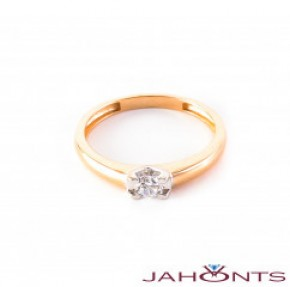

Welcome to žiedai
Vestuviniai žiedai | ziedelis.lt
2020.10.29 13:03Reikia patarimo? Reikia patarimo? +37060341418 [email protected] Užklausa close Sužadėtuvių žiedai Klasikiniai sužadėtuvių žiedai Modernūs sužadėtuvių žiedai Sužadėtuvių žiedai su brangakmeniais Visos išparduodamos prekės Dovanų kuponai Vestuviniai žiedai Klasikiniai vestuviniai žiedai Modernūs vestuviniai žiedai Vestuviniai žiedai su deimantais Visos išparduodamos prekės Dovanų kuponai Juvelyriniai dirbiniai Auksiniai žiedai Žiedai su deimantais Žiedai su brangakmeniais Auksiniai auskarai Auskarai su deimantais Auskarai su brangakmeniais Auskarai su briliantais Auksiniai pakabukai Pakabukai su deimantais Pakabukai su brangakmeniais Auksinės grandinėlės Visos išparduodamos prekės Dovanų kuponai Verta Žinoti DUK Prisijungti Registruotis 0,00 EUR Tarpinė suma Nemokamas Pristatymas 0,00 EUR Viso Pereiti prie apmokėjimo Prisijungti / Registruotis
Vestuviniai žiedai
Pagrindinis Vestuviniai žiedai Jūsų naršyklė nepalaiko HTML5 vaizdo įrašų. Klasikiniai vestuviniai žiedai Modernūs vestuviniai žiedai Vestuviniai žiedai su deimantais GERAI Išvalyti viską -Lydinys
Deimanto (-ų) svoris
Rūšiuoti
Lydinys
Baltas auksas (6) Geltonas auksas (11)Deimanto (-ų) svoris
0,10-0,19 (2) 0,20-0,29 (7) 0,30-0,39 (5) 0,50-0,59 (2) 0,70-1,50 ct (1)Vestuviniai žiedai
Rūšiuoti Aktualumas Pavadinimas, A - Z Pavadinimas, Z - A Kaina, mažiausia - didžiausia Kaina, didžiausia - mažiausia FiltrasAuksinis žiedas su Briliantais Deimantinė Juostelė 48
775,00 EUR 465,00 EUR Greita peržiūra Daugiau informacijaAuksinis žiedas su Briliantais Deimantinė Juostelė 47
1 100,00 EUR 660,00 EUR Greita peržiūra Daugiau informacijaSužadėtuvių žiedas su Briliantais Deimantinė juostelė 46
650,00 EUR 390,00 EUR Greita peržiūra Daugiau informacijaAuksinis žiedas su Briliantais Deimantinė juostelė 45
1 750,00 EUR 1 050,00 EUR Greita peržiūra Daugiau informacijaSužadėtuvių žiedas su Briliantais Deimantinė Juostelė 41
875,00 EUR 525,00 EUR Greita peržiūra Daugiau informacijaAuksinis žiedas su Briliantais Deimantinė Juostelė 39
1 025,00 EUR 615,00 EUR Greita peržiūra Daugiau informacijaAuksinis žiedas su Briliantais Deimantinė Juostelė 38
1 025,00 EUR 615,00 EUR Greita peržiūra Daugiau informacijaAuksinis žiedas su Briliantais Deimantinė Juostelė 34
725,00 EUR 435,00 EUR Greita peržiūra Daugiau informacijaAuksinis žiedas su Briliantais Deimantinė Juostelė 33
3 350,00 EUR 2 010,00 EUR Greita peržiūra Daugiau informacijaAuksinis žiedas su Briliantais Deimantinė Juostelė 31
1 250,00 EUR 750,00 EUR Greita peržiūra Daugiau informacijaAuksiniai vestuviniai žiedai su Briliantais VKA139
1 500,00 EUR 1 200,00 EUR Greita peržiūra Daugiau informacijaAuksinis žiedas su Briliantais Deimantinė Juostelė 28
1 025,00 EUR 615,00 EUR Greita peržiūra Daugiau informacijaAuksiniai vestuviniai žiedai VK127-A1
850,00 EUR 680,00 EUR Greita peržiūra Daugiau informacijaAuksiniai vestuviniai žiedai VM127
625,00 EUR 500,00 EUR Greita peržiūra Daugiau informacijaAuksiniai vestuviniai žiedai VK131
1 050,00 EUR 840,00 EUR Greita peržiūra Daugiau informacijaAuksiniai vestuviniai žiedai VK130
925,00 EUR 740,00 EUR Greita peržiūra Daugiau informacijaAuksiniai vestuviniai žiedai VKA138
1 450,00 EUR 1 160,00 EUR Greita peržiūra Daugiau informacijaAuksiniai vestuviniai žiedai VKA137
1 875,00 EUR 1 500,00 EUR Greita peržiūra Daugiau informacijaAuksiniai vestuviniai žiedai VM126
1 125,00 EUR 900,00 EUR Greita peržiūra Daugiau informacijaAuksiniai vestuviniai žiedai VM125
1 125,00 EUR 900,00 EUR Greita peržiūra Daugiau informacijaAuksiniai vestuviniai žiedai VM124
1 125,00 EUR 900,00 EUR Greita peržiūra Daugiau informacijaAuksiniai vestuviniai žiedai VM123
875,00 EUR 700,00 EUR Greita peržiūra Daugiau informacijaAuksiniai vestuviniai žiedai VK129
875,00 EUR 700,00 EUR Greita peržiūra Daugiau informacijaAuksiniai vestuviniai žiedai VM122
875,00 EUR 700,00 EUR Greita peržiūra Daugiau informacija 1 2 3 4 Vestuvinių žiedų istorija.
Daug kam iš pirmo žvilgsnio gali atrodyti, kad sutuoktuvių žiedai yra visiems gerai žinomas ir daug klausimų nekeliantis, dviejų žmonių amžinos meilės priesaikos simbolis, liudijantis jų pažadą kartu būti ir džiaugsme, ir varge. Daugybę metų taip ir buvo – susituokti pasiruošusios poros rinkdavosi tradicinį variantą: vestuviniai žiedai geltono aukso. Ir tik po kurio laiko vestuviniai žiedai poroms pradėjo kelti klausimų, jų pasirinkimas iššaukė ne vieną diskusiją tiek viešoje erdvėje, tiek privačiuose pokalbiuose. Tad kokia yra jų istorija, ką jie simbolizuoja ir kaip atrasti sau tinkamiausią?Vestuviniai žiedai – ne tik gražus aksesuaras
Simbolinė vestuvinių žiedų kaip amžinos, nesibaigiančios (lyg ratas) meilės reikšmė žinoma daugeliui. Tačiau bėgant laikui atsiranda vis daugiau susituokti pasiruošusių porų, kurioms žiedai su briliantais ar su baltu auksu tampa vis įdomesni, norisi dažniau nuklysti nuo tradicinio geltonojo aukso varianto, paeksperimentuoti. Pamažu keičiasi ir pats dizainas, žiedai tampa vis modernesni, ekstravagantiškesni, tad tradicinė ir jau simboline tapusi žiedų reikšmė stiprėja ir įgauna naują prasmę, įskaitant patį žiedo nešiojimą. Daugelis mano, kad vestuviniai žiedai nešiojami ant kairės rankos jau savaime yra netradiciška ir modernu. Taip manoma dėl to, kad ilgą laiką lietuviai (ir daugelis kitų šiaurės Europos valstybių gyventojų) vestuvinius žiedus nešiodavo tik ant dešinės rankos ir ne kitaip. Tačiau, panagrinėjus plačiau, vestuviniai žiedai ant kairės rankos nešiojami nuo pat Senovės Egipto laikų, kur jie buvo audžiami iš augalų lapų, augančių šalia Nilo upės. Senovės egiptiečiai manė ir nuoširdžiai ilgus metus tikėjo, kad bevardžio piršto vena veda tiesiai į žiedo nešiotojo širdį. Tad kodėl gi ir žiedo neperkėlus „arčiau širdies”?Kaip reikia nešioti vestuvinius žiedus?
Vestuviniai žiedai kaina skiriasi ne veltui. Nuo pat senovės laikų šie žiedai buvo tarsi galimybė parodyti savo statusą, padėtį visuomenėje ar turimo finansinio kapitalo dydį. Didžiųjų valstybių karalių vestuviniai žiedai buvo naudojami ne tik pagal pagrindinę, simbolinę sutuoktuvių, prasmę, bet ir kaip antspaudai su valstybės herbu, skirti užantspauduoti itin svarbius dokumentus. Tad buvo tikima, kad kuo brangesnis ir didesnis žiedas, tuo turtingesnis ir aukštesnę padėtį visuomenėje turintis yra jo savininkas. Tačiau šiais laikais poros pačios sprendžia, ar žiedai nešiojami kasdien. Yra tokių nuotakų, kurios vestuvinį žiedą perveria grandinėle ir nešioja ant kaklo, sakydamos, kad taip jis atsiduria dar arčiau širdies. Taigi, kaip matote, kiekviena pora susikuria savas vestuvinių žiedų nešiojimo tradicijas. Galbūt jūs sugalvosite kažką dar kitoniškesnio?Moderniosios vestuvinių žiedų tradicijos
Bėgant metams keitėsi ne tik tauriojo metalo, iš kurio pagaminti žiedai, pasirinkimas ar nešiojimo būdas. Su laiku keitėsi ir pati žiedų išvaizda. Vestuviniai žiedai su deimantais, kažkada atrodę kaip modernus pasirinkimas, šiandien jau nieko nebestebina. Šiais laikais vestuviniai žiedai graviruojami pagal individualų užsakymą, gaminami įvairiausių išlinkimų ir formų. Galima užsisakyti viską, ko geidžia širdis!Taigi, nereikia užsisėdėti vietoje ir pasikliauti vien tik laiko patikrintais bei daugelį metų naudojamais vestuvinių žiedų variantais. Kaip matote, jų gali būti pačių įvairiausių. Žinoma, jei širdis linksta prie klasikos, leiskite jai nuspręsti teisingai!
Jei jus domina vestuviniai žiedai internetu, su mumis galite susisiekti elektroniniu paštu: [email protected] Taip pat primename, kad dominančius juvelyrinius gaminius galite pamatyti Vilniuje ir Kaune, iš anksto susitarus su mūsų klientų aptarnavimo ekspertais.
Kaip išsirinkti vestuvinius žiedus?
Įsivaizduokite: įeinate į vieną papuošalų ir juvelyrinių gaminių parduotuvę, apžiūrite ten esančius žiedus, kelis iš jų pasimatuojate, tuomet keliaujate į kitą papuošalų parduotuvę, su konsultantu pasitariate dėl kelių ten esančių žiedų, pasimatuojate ir juos. Tuomet grįžtate namo, panaršote internete ir keliose internetinėse papuošalų parduotuvėse randate sau patinkantį žiedą. Galiausiai, išsirenkate favoritą ir nusiperkate jį. Valio, po kelių dienų kurjeris jį jums atveš! Skamba pažįstamai? Tikriausiai daugelis tokiu būdu renkasi papuošalus, kuriuos priderina prie vienos ar kitos aprangos, nešioja tam tikromis progomis ar tiesiog nutaria pradžiuginti artimuosius gražia dovana. Tačiau kaip vyksta vestuvinių žiedų paieškos? Juk tai papuošalas, kurį nešiosite kasdien, visą savo gyvenimą. Negana to, jis turi turėti ir simbolinę reikšmę dviems įsimylėjėliams. Paieškos turėtų būti labiau apgalvotos!Vestuviniai žiedai Kaune, Vilniuje ar iš senelės lobyno?
Žinoma, jei vestuviniai žiedai jūsų šeimoje ištisą šimtmetį yra perduodami iš kartos į kartą, tuomet nerimauti nereikėtų. Senelė greičiausiai jau turi paruošusi žiedus ir tiesiog laukia iškilmingosios progos. Tačiau, jei jūsų šeimoje tokios tradicijos nepuoselėjamos, teks paplušėti ieškant tinkamiausiųjų. Tikrai nepatariame į Google paieškos laukelį įvesti „vestuviniai žiedai Vilnius” ir tiesiog čiupti pačių pirmų vestuvinių žiedų. Juk, galų gale, miestas, kuriame perkami žiedai, šioje vietoje visiškai nesvarbus. Kokie vestuviniai žiedai geriausi, galėsite pasakyti tik įvertinę kelis kriterijus.Į ką atkreipti dėmesį renkantis vestuvinius žiedus?
Pirmiausia, jei jau renkatės vestuvinius žiedus, sužadėtuvių žiedas jau galimai spindi ant rankos. Atidžiai įvertinkite jį: iš kokio jis tauriojo metalo, kokia jo forma, stilius, brangakmeniai, ar jis blizgus ir krentantis į akį, o gal priešingai – labai kuklus. Tai bus pirmasis kriterijus, leisiantis ieškoti tokių vestuvinių žiedų, kurie drastiškai nesiskirs nuo sužadėtuvių žiedo. Be to, vestuviniai žiedai kaina neturėtų labai skirtis nuo sužadėtuvių žiedų. Taigi, kai jau turite pirminę idėją, kokio stiliaus turėtų būti žiedai, nutarkite, ar ieškosite vienodų žiedų. Nepamirškite, kad jie neprivalo būti identiški. Juk tai puiki galimybė išreikšti savo asmeninį stilių bei pasaulėžiūrą. Vestuviniai žiedai su deimantais – dažnai pasirenkamas variantas, tačiau, jei vienas iš sutuoktinių nenori žiedo su deimantu – ne bėda! Eksperimentuokite ir nebijokite laužyti nusistovėjusių normų. Bene svarbiausia, renkantis vestuvinius žiedus, galvoti apie ilgą jų nešiojimo laikotarpį. Tikėtina, kad šių žiedų ilgai nepakeisite, tad vestuvinių žiedų paieškai skirkite nemažai laiko, leiskite sau ilgiau pasvarstyti apie kiekvieną variantą, nepirkite žiedų paskubomis.Kokį brangakmenį pasirinkti?
Gerai pagalvokite apie brangakmenį, kuris puoš jūsų žiedus. Vestuviniai žiedai su safyru gali būti labai madingi šią vasarą, tačiau jau po pusmečio atsibosti ir nedžiuginti jūsų pačių. Juk nenorėtumėte, kad nesulaukus nė pirmųjų vestuvių metinių jau norėtumėte pakeisti taip ilgai ieškotus vestuvinius žiedus. Tad labai svarbu išgryninti tai, koks akmuo yra arčiausiai jūsų ir antrosios pusės širdies.Kaip jau pastebėjote, vestuviniai žiedai nėra atsirenkami vien pagal dydį ar spalvą. Tai netrumpas procesas, reikalaujantis atidaus sužadėtinių dėmesio bei suvokimo apie žiedų svarbą. Tikime, kad jei atkreipsite dėmesį į visus išvardintus kriterijus, galiausiai rasite savo svajonių vestuvinius žiedus! Skaityti daugiau
Atsiliepimai
as suzaveta...tobulai moteriai...tobulas grozis....
Ruta Astrauskiene
Spa 28, 2018
Esam labai patenkinti jusu gaminiais,jie nuostabus ir aptarnavimas puikus,rekomenduoju😊.
Alma Ernienė
Kov 3, 2020
Pačios didžiausios rekomendacijos, tikrai nenusivylėme ir drasiai galime rekomenduoti kitiems🙂🤗.
Asta Sukackiene
Rgs 2, 2019
Gražiausi Ziedeliai,didelis pasirinkimas,puikiausias nuosidziausias aptarnavimas. Rekomenduoju!.
Mantas Herkus
Sau 14, 2020
Greitos ir kokybiškos paslaugos.
Matulevicius Matulis Jaunesnysis
Rgp 7, 2019
Liuks! Malonus aptarnavimas, sypsena, teisingas poziuris! Visiems rekomenduoju!.
Antanas Kemesis
Bal 13, 2019
Rekomenduoju Ziedelis.lt ! Tikrai nepasigailesite. Ispildo visus jusu norus! O kokybe ir kainos tiesiog superines. Dekojame JUMS uz prisidejima prie musu sventes ir kruopstu darba. 😊😊🥂😍.
Serapinė Erika
Bir 27, 2019
Galiu tik pagirti. Greitai atsako, pataria renkantis bei greitai pagamina ziedelius. Lankstumas, kokybe ir operatyvumas. Saunuoliai, taip ir toliau :).
Vaida Barysaitė-Lavrėnovienė
Bal 18, 2019
Labai maloniai pasitiko, isklause norus bei greitai pagamino musu ziedelius! Aciu, ziedai nuostabus:).
Lolita Žirlienė
Bir 27, 2019
viskas labai gražu Patinka labai SĖKMĖS LINKIU G RAŽIUOSE DARBUOSE ❤❤❤😍😍😍😍🌹🌹🌹✌✌✌.
Janina Vabuolienė
Spa 28, 2018
Kategorijos DUK
Ar galima vestuvinius žiedus pamatyti “gyvai”?Tokia galimybė yra, apsilankius mūsų biuruose Vilniuje ir Kaune, kur galite pamatyti mūsų turimą asortimentą ir ekspozicinius modelius, pagal kuriuos yra vykdoma individuali vestuvinių žiedų gamyba. Taip pat galite pateikti ir savo vestuvinio žiedo viziją, kurią mes pasistengsime realizuoti.
Ar nurodyta vestuvinių žiedų kaina ir svoris yra poros žiedų ar vieno?Dažniausiai visų ziedelis.lt vestuvinių žiedų kaina yra nurodyta už porą, taip pat nurodomas ir žiedų svoris. Visų kitų žiedų kaina yra nurodyta už vienetą. Kaina gali kisti priklausomai nuo aukso kiekio.
Ar užsakyti vestuviniai žiedai bus su “comfort fit” zona?Tam, kad vestuviniai žiedai būtų tikrai patogūs, jie yra gaminami “comfort fit” zona. Jei norite standartinių žiedų, tuomet tiesiog nurodykite, kad šios zonos Jums nereikia.
Bendradarbiaujame
Informacija
Informacija Pristatymo sąlygos Grąžinimas ir garantijos Apmokėjimas Privatumo politika Mano paskyra Kontaktai Apie musPopuliariausios kategorijos
Populiariausios kategorijos Sužadėtuvių žiedai Vestuviniai žiedai Juvelyriniai dirbiniai Verta žinotiAdresai
Adresai Gedimino g. 43, 44240 KaunasI-VII 9.00 – 20.00
(Tik iš anksto suderinus susitikimą) Konstitucijos pr. 26, 08106 Vilnius
I-VII 9.00 – 20.00
(Tik iš anksto suderinus susitikimą) Elizabetes iela 51, LV-1010 Riga
I-VII 9.00 – 20.00
(Tik iš anksto suderinus susitikimą)
Kontaktai
Kontaktai +37060341418 [email protected] UžklausaInformojame, sklandžiam naršymui užtikrinti el.parduotuvė "Žiedelis" naudoja slapukus (angl. cookies)
SUTINKU2015-2020 © Žiedelis. Visos teisės saugomos.
